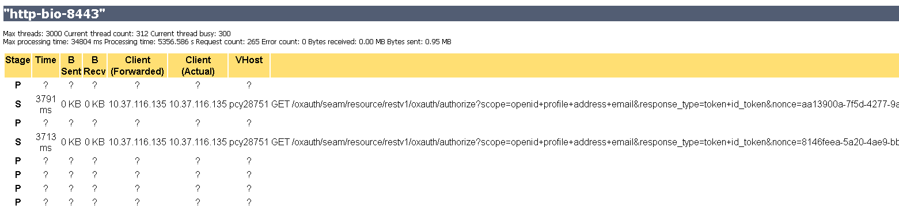

Fine Tuning Gluu Server#
Gluu Server has a stateless architecture, it scales quite easy. However to get high-performant server it must be tuned accordingly.
Tuning consists of:
- LDAP Server (OpenDJ, OpenLDAP)
- Web Application Container (Tomcat, Jetty, JBoss)
- Gluu Server configuration Tuning
LDAP Server#
(For convenience all samples stick to OpenDJ however general recommendations are the same for other LDAP Servers)
- Maximum number of allowed connections
If there are not enough connections to serve the client, a connection is put "on hold" and waits. To avoid delays it's recommended to provide expected maximum allowed connections.
max-allowed-client-connections=1000 - Provide enough resources to LDAP Server
For example OpenDJ use JVM for running, for high performance it's recommended to give enough memory via JVM system properties. - Allow LDAP Server use cache as much as possible.
dsconfig -n set-backend-prop --backend-name userRoot --set db-cache-percent:50
Apache Tomcat#
- Set maximum for parallel requests.
Connector parameters inserver.xml:- maxThreads="10000"
- maxConnections="10000"
- Set memory settings via JAVA_OPTS
set "JAVA_OPTS=-Xms1456m -Xmx7512m -XX:MaxPermSize=256m -XX:+DisableExplicitGC" - Operating time
Check via Tomcat monitor whether requests are handled or just "hangs" because there are not enough resources. Here is sample when processing time increase due to lack of resources:

Gluu Server#
- oxauth-ldap.properties - Increase ldap connection pool size
maxconnections: 1000
Gluu Server Benchmark#
Benchmarking based on Authentication Implicit Flow: http://openid.net/specs/openid-connect-core-1_0.html#ImplicitFlowAuth
Measures were made on single machine with Gluu Server, LDAP Server and test runner (clients). Therefore here is quite subjective results
| Invocations | Parallel Threads | Time | Comments |
|---|---|---|---|
| 100 | 100 | 8 seconds | |
| 1000 | 100 | ||
| 1000 | 200 | Not representable: CPU 100% | |
| 2000 | 100 | Not representable: CPU 100% | |
| 2000 | 200 | Not representable: CPU 100% | |
| 10000 | 300 | Not representable: CPU 100% | |
| 100000 | 300 | Not representable: CPU 100% |